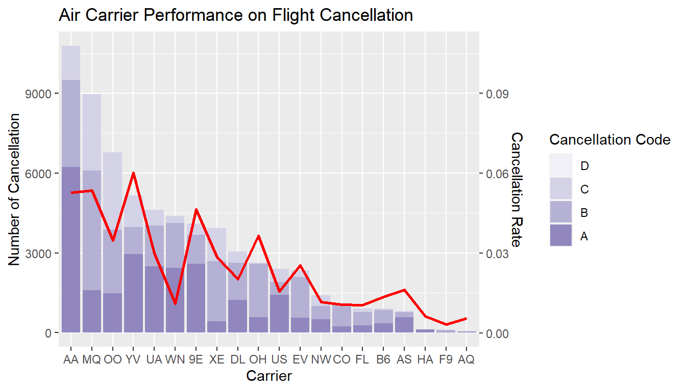
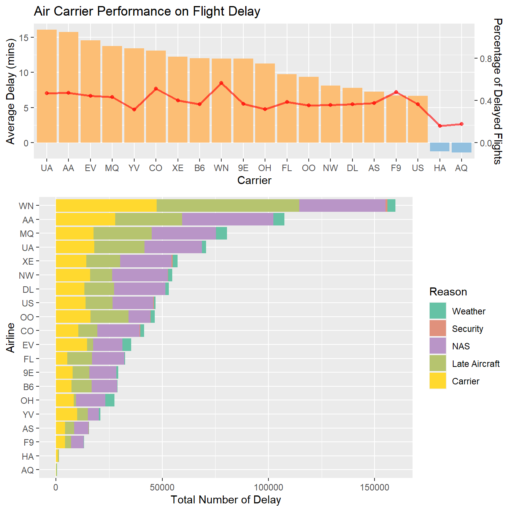
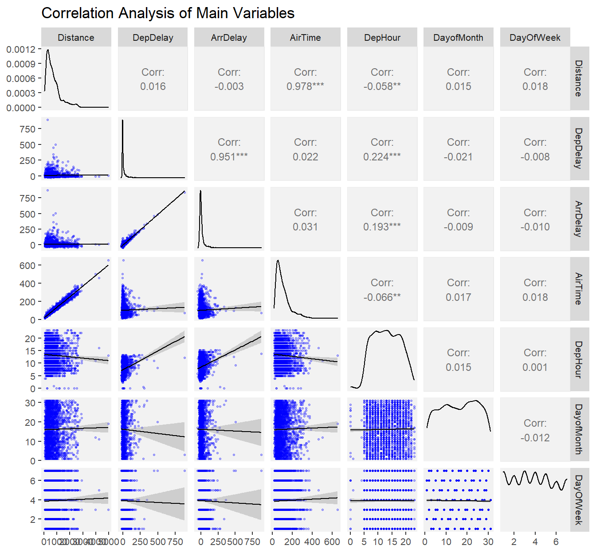

Chapter 5 Results
5.1 Flight Cancellation Analysis
A=Carrier Caused, B=Weather, C=National Aviation System, D=Security
Flight cancelation is one of the biggest concerns for travelers since it not only affects their original schedule but also increases the costs of the air carriers to accommodate the travelers. If a flight is canceled, the travelers have to take the next available same route flight, which may be the same airline on the next day due to the full occupancy of the same-day upcoming flights. In this way, the travelers’ schedules will be harmfully affected. On the other hand, in order to discharge the responsibilities and keep good customer experiences, the air carriers need to cover the rebooking costs, hotel fees, and other related fees. Therefore, finding the reasons for flight cancellation and looking at its pattern in the U.S. will help the travelers better understand the flight performances.
Based on the bar plot on the left above, the number of flights caused by the air carrier is the highest. The air carrier’s cause of the cancellation was due to circumstances within the airline’s control (e.g. maintenance or crew problems, aircraft cleaning, baggage loading, fueling, etc.). Weather condition is another noticeable factor that causes flight cancellations. Extreme weather, significant meteorological conditions (actual or forecasted) that, in the judgment of the carrier, can prevent the operation of a flight such as a tornado, blizzard, or hurricane.
Based on the bar plot on the right above, large airports or the airports in the main areas(e.g., Illinois, Texas, California, New York, etc.) of the U.S. are most likely to have the flights canceled. According to both plots above, we may conclude that the air carriers that operate in the airports of those states have significant airline control problems or more extreme weather conditions than other states in the U.S. Since these states have some of the largest airports in the U.S., such as O’Hare International Airport, Dallas Fort Worth International Airport, and Los Angeles International Airport, it is reasonable to believe that the total number of flights is very large in those states.


Travelers may also consider which air carrier to choose to minimize the probability of flight cancellation when those carriers provide similar services and prices. From the plots above, American Airlines, Envoy Air, and SkyWest Airlines have the most flight cancellations. American Airlines is the airline with the largest passenger capacity, total passenger mileage, and fleet in the world. Therefore, we may conclude that the total number of flights is very large so the total number of flight cancellations can be large too and it is hard to manage a large number of flights. However, extreme weather and National Aviation System (NAS) are big problems for Envoy Air and SkyWest Airlines, where NAS cancellations are attributable to the national aviation system that refer to a broad set of conditions, such as non-extreme weather conditions, airport operations, heavy traffic volume, and air traffic control.
5.2 Flight Delay Analysis

Even though flight delay may not be as influential as flight cancellation, it still bothers millions of travelers everyday. Here, we would like to analyze the main reason of the flight delays and the average delay time for those delays in 2008.
Based on the bar plot on the left above, delay attributable to the National Aviation System, delay attributable to the late-arriving aircraft, and delay attributable to the carrier caused most of the flight delays.
Based on the bar plot on the right above, the average delay time of delay attributable to the weather, delay attributable to the late-arriving aircraft, and delay attributable to the carrier is the highest.


Also, as shown in the boxplot and ridgeline plot above, the average delay time distributes most from 10 minutes to 25 minutes.
Therefore, we highly recommend the travelers check the weather condition before traveling, choose reliable airlines that have good management systems, and avoid the flights that always have late previous airlines.

Travelers may also consider which air carrier to choose to minimize the probability of flight delay when those carriers provide similar services and prices.
Based on the first plot above, United Airlines, American Airlines, Eva Air, Envoy Air, Mesa Airlines, and Continental Airlines have the longest average delay time that is above 12.5 minutes. Thus, according to the delay reasons discussed before, we suggest those air carriers improve their airline controls and flight on-time management system. It is noticeable that Hawaiian Airlines and 9 Air have negative average delay time, which implies that their flights are very likely to arrive early than the scheduled time. Thus, these two airlines are good choices for travelers.
Based on the second plot above, Southwest Airlines, American Airlines, Envoy Air, and United Airlines have the largest total number of delay, in which Southwest Airlines has extremely a large amount of flights delayed. NAS and Late Aircraft Arrival are the biggest problems that caused those delays, so airport operations, heavy traffic volume, and air traffic control may be the root causes. It can be easily observed that United Airlines and American Airlines have very long average delay time and a large number of delays.
Besides the price, time, and availability, travelers usually choose the air carriers that have the best service, minimum delay or cancellation probability, and best reputation. According to the Airline Ranking 2008 published by the Bureau of Transportation Statistics, United Airlines and American Airlines are the largest U.S. air carriers in terms of revenue, the number of passengers, and miles. Even though the performances of United Airlines and American Airlines are not that good based on our observations, we assume the total number of flights of those two carriers is very large so the total number of flight delays can be large too and it is hard to manage a large number of flights.
As we can see from the spatial plot above, Illinois and New Jersey rank highest nationwide for departure delays. The main airport in Illinois is O’Hare International Airport, the busiest airport in the U.S., and Newark Liberty Airport is also ranked in the U.S.’s 29 busiest airports for departures. Based on our previous observations that Air Carriers, NAS, and Late Aircraft Arrival are the biggest problems for flight delays. Therefore, the following insights can be obtained:
O’Hare International Airport and Newark Liberty Airport are unquestionably the busiest airspace, so any one delay really sends those airports into a disadvantage for on-time performance
Due to the increase in population and airlines, the airports are operating at capacities larger than they were built for

The two plots above show the top average departure delay of the origin airport and the average arrival delay of the destination airport. An interesting observation is that some airports, including Hilo International Airport, Lihue Airport, Bert Mooney Airport, Bellingham International Airport, and Tupelo Regional AirportTupelo Regional Airport, have negative average departure delay time and negative average arrival delay time. This implies that those airports have better airline management systems and have airlines always ahead of schedule.

If we have choices, what is the best time of the day to start our trip? The heatmap above answers this question. It is obvious that the earlier in the day we fly, the less likely we’ll be stuck with flight delays, and delay times only get worse as the day goes on. The probable reasons are the following：
The weather conditions at the night are worse. The storms, hurricanes, and heavy snow are more likely to happen at the night
There are too many flight delays during the daytime, and airline traffic and airport operation problems are getting worse at the end of the day.


According to the plots above, the delays spread over 24 hours of a day and 7 days of a week, so there is no noticeable relationship between ‘Time of a day’ and ‘Total number of delays’. Also, there is no noticeable relationship between ‘Day of a week’ and ‘Total departure delay time’. Therefore, there is no seasonality to the delays by airlines.
5.3 Exploratory Analysis

Last but not least, it is worthy to analyze the correlations between the main variables in our dataset. Are there any important insights we can obtain from those variables to help travelers better plan for their future trips? The scatterplot matrix above answers the question and shows:
There is a positive correlation between
Departure Delay and Arrival Delay
Distance of the flight and the Arrival time
We assume that If the coefficient value lies between ± 0.50 and ± 1, then it is said to be a strong correlation. If the value lies between ± 0.30 and ± 0.49, then it is said to be a medium correlation. If the value lies below + 0.29, then it is said to be a small correlation. Thus, Arrival Time and Distance has a strong correlation, Departure Delay and Arrival Delay has a strong correlation, Departure Hour and Departure Delay has a low correlation, Departure Hour and Arrival Delay has a low correlation.
- No variable has a normal distribution